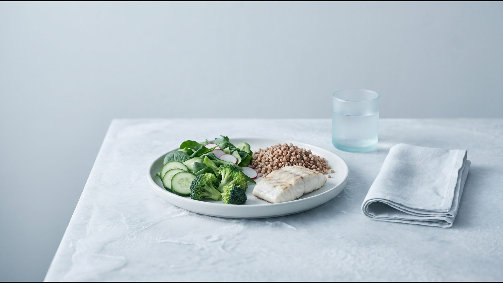

Калькулятор калорий для похудения: безопасный диапазон

Как пользоваться калькулятором
Калькулятор калорий для похудения сначала считает суточную норму калорий, то есть сколько энергии вы тратите за сутки, а затем рацион с умеренным дефицитом. Из нормы он вычитает 600 ккал, как советует NHS, и не опускает результат ниже 1 200 ккал для женщин и 1 500 ккал для мужчин. Результат показан диапазоном, потому что у формулы погрешность около 10 %.
Что ввести. Сначала калькулятор спросит о состояниях, при которых расчёт не подходит, затем о параметрах тела и активности.
Уровень активности. Уровни, их границы и коэффициенты для каждого образа жизни взяты из отчёта FAO/WHO/UNU (2004).
| Уровень (границы FAO) | Как это выглядит по FAO | Коэффициент |
|---|---|---|
| Малоподвижный или лёгкая активность (1,40–1,69) | работа без больших физических усилий, транспорт, без регулярных тренировок, досуг сидя | 1,55 |
| Активный или умеренно активный (1,70–1,99) | сидячая работа и ежедневно около часа умеренных или интенсивных упражнений (бег, велосипед, спорт) либо работа в движении, как на стройке | 1,75 |
| Высокоактивный (2,00–2,40) | несколько часов тяжёлого труда или около 2 часов плавания или танцев в день при несидячей работе | 2,25 |
Как читать результат. Первая строка показывает норму для поддержания веса, вторая — сколько калорий нужно, чтобы похудеть. Если дефицит опускает рацион ниже 1 200 ккал (женщины) или 1 500 ккал (мужчины), калькулятор поднимает нижнюю границу до этого уровня.
Откуда цифры
Суточную норму считают в два шага: расход энергии в покое (сколько организм тратит без движения) умножают на коэффициент активности.
Формула Миффлина–Сан Жеора. Её вывели в 1990 году на 498 здоровых людях 19–78 лет, из которых у 234 было ожирение (Mifflin, Am J Clin Nutr 1990). Простыми словами: каждый килограмм веса добавляет к расходу 10 ккал, каждый сантиметр роста — 6,25 ккал, а каждый год возраста отнимает 5 ккал. Для мужчин к сумме прибавляют 5 ккал, для женщин вычитают 161 ккал.
Пример. Женщина 40 лет, рост 165 см, вес 85 кг: 850 + 1 031 − 200 − 161 ≈ 1 520 ккал в покое. При малоподвижном образе жизни (1,55) это около 2 360 ккал, а с погрешностью ±10 % норма для поддержания веса составляет 2 100–2 600 ккал. Для похудения калькулятор вычитает 600 ккал и показывает 1 500–2 000 ккал в сутки.
Насколько точна формула. Систематический обзор Frankenfield (J Am Diet Assoc, 2005) назвал её самой надёжной. В проверке Frankenfield (Clin Nutr, 2013) она уложилась в 10 % от измеренного расхода у 87 % людей без ожирения и у 75 % с ожирением, ошибаясь в обе стороны.
Коэффициент активности. FAO/WHO/UNU умножает его на основной обмен, а формула даёт расход в покое, поэтому результат приближённый. Диапазон ±10 % покрывает погрешность формулы; разброс внутри уровня активности, по данным FAO, добавляет ещё до ±8–10 %, поэтому сверяйте расчёт с динамикой веса.
Безопасный дефицит и нижняя граница
Дефицит калорий в калькуляторе составляет 600 ккал в сутки: NHS называет такое сокращение рациона безопасным и устойчивым. Американские рекомендации AHA/ACC/TOS (2013) предлагают дефицит 500 или 750 ккал либо рацион 1 200–1 500 ккал для женщин и 1 500–1 800 ккал для мужчин. Ниже 1 200 и 1 500 ккал калькулятор не опускается: это наш вывод из этих рекомендаций, а не отдельная официальная норма.
По NICE NG246 (2025), рацион 800–1 200 ккал в сутки рассматривают только в специализированной службе, а менее 800 ккал лишь при клинической необходимости быстро похудеть, например перед операцией. Оба варианта должны быть полноценными по составу и длиться не дольше 12 недель, а как долгосрочную стратегию NICE не рекомендует ни один.
Резкое урезание калорий повышает риск камней в желчном пузыре (NIDDK) и потери мышц (Vink, Obesity 2016); подробнее на странице калькулятора срока похудения.
Питание без подсчёта калорий: метод тарелки
Считать калории не обязательно. Главное условие по NICE NG246 — чтобы энергии поступало меньше, чем тратится; метод тарелки (Harvard Healthy Eating Plate) помогает добиться этого без цифр.

- половина тарелки — овощи и фрукты (картофель к овощам не относится);
- четверть — цельнозерновые крупы, хлеб или макароны;
- четверть — рыба, птица, бобовые, орехи; красное мясо ограничить, переработанное убрать;
- напитки — вода, чай, кофе без сахара; сок не больше маленького стакана в день.
Меню на неделю из украинских продуктов есть в статье питание для похудения.
Почему дефицит трудно удержать долго
Голод. Аппетит на дефиците зависит от сна, состава еды и режима; способы его снизить описаны в статье постоянно хочется есть.
Адаптация. Организм частично приспосабливается к меньшему весу, но типичное плато через 6–8 месяцев модель Hall (Lancet, 2011) больше связывает с тем, что рацион со временем труднее соблюдать.
Учёт. В исследовании Lichtman (NEJM, 1992) люди с ожирением, которым не удавалось похудеть, недооценивали съеденное в среднем на 47 %. Поэтому, если вес не меняется, сначала проверьте учёт, а не урезайте рацион; подробнее в статье вес стоит на месте.
Повседневная жизнь. Жёсткий план без места для праздников и гостей трудно держать месяцами.
Кому расчёт не подходит
Формулу выводили на здоровых взрослых 19–78 лет. Если что-то из списка касается вас, калькулятор не покажет цифр и посоветует обратиться к врачу.
- Беременность. По данным FAO/WHO/UNU (2004), потребность в энергии растёт примерно на 85, 285 и 475 ккал в сутки в первом, втором и третьем триместре.
- Грудное вскармливание. В первые 6 месяцев лактации FAO советует хорошо питающимся женщинам добавлять к рациону около 505 ккал в сутки (расчёт FAO сделан для исключительно грудного вскармливания).
- Расстройство пищевого поведения сейчас или в прошлом. NICE NG246 советует оценивать такие расстройства перед низкокалорийными диетами и учитывать их при выборе лечения.
- Диабет, который лечат инсулином или препаратами сульфонилмочевины. По AHA/ACC/TOS (2013), у людей с диабетом 2 типа похудение на 5–10 % связано со снижением гликированного гемоглобина (HbA1c) на 0,6–1,0 % и меньшей потребностью в сахароснижающих лекарствах. Дозы корректирует врач.
- Возраст до 18 лет. Вес детей и подростков оценивают по возрастным таблицам ВОЗ или центильным кривым NICE, а формулу проверяли только на взрослых.
Людям 65+ калькулятор покажет результат, но план лучше обсудить с врачом: NICE советует осторожно толковать ИМТ в этом возрасте и обращает внимание на риск недостаточного питания.
Частые вопросы
Сколько калорий нужно, чтобы сбрасывать 0,5 кг в неделю?
Считают от вашей нормы: NHS советует худеть на 0,5–1 кг в неделю, а рацион сокращать примерно на 600 ккал в сутки. Классическое правило «500 ккал в сутки дают 0,5 кг в неделю» (NHLBI, 1998) завышает прогноз, и чем дольше, тем больше ошибка (Hall, Lancet 2011). Сроки для своей цели оцените в калькуляторе срока похудения.
Можно ли дефицит 1000 ккал?
У многих людей минус 1 000 ккал опускает рацион ниже 1 200 ккал (женщины) или 1 500 ккал (мужчины), поэтому калькулятор такой дефицит не предлагает. Рацион 800–1 200 ккал NICE (2025) допускает только в специализированной службе, а менее 800 ккал, по AHA/ACC/TOS (2013), только под медицинским наблюдением. Более быстрый план, если он нужен, составляет врач.
Как учесть тренировки?
Не добавляйте калории за каждую тренировку, а выберите уровень активности за обычную неделю. По данным FAO/WHO/UNU (2004), час умеренных или интенсивных упражнений ежедневно может поднять коэффициент с 1,55 до 1,75, то есть на уровень выше. Участники исследования Lichtman (1992) переоценивали свою активность на 51 %, так что при сомнении выберите уровень ниже.
Почему вес не уходит на дефиците?
Рассчитанная норма может быть выше реальной: у каждого четвёртого человека с ожирением формула ошибается больше чем на 10 % (Frankenfield, 2013). Бывает, что съеденное недооценивается (Lichtman, 1992), а ещё вес маскируют колебания воды; разбор причин есть в статье вес стоит на месте.
Источники
- Mifflin MD, St Jeor ST, Hill LA et al. A new predictive equation for resting energy expenditure in healthy individuals. Am J Clin Nutr, 1990. https://doi.org/10.1093/ajcn/51.2.241
- Frankenfield D, Roth-Yousey L, Compher C. Comparison of predictive equations for resting metabolic rate in healthy nonobese and obese adults: a systematic review. J Am Diet Assoc, 2005. https://doi.org/10.1016/j.jada.2005.02.005
- Frankenfield DC. Bias and accuracy of resting metabolic rate equations in non-obese and obese adults. Clin Nutr, 2013. https://doi.org/10.1016/j.clnu.2013.03.022
- FAO/WHO/UNU. Human energy requirements. Report of a Joint FAO/WHO/UNU Expert Consultation, 2004: главы 5, 6, 7. https://www.fao.org/4/y5686e/y5686e07.htm
- NHS Better Health. Calories and weight loss. https://www.nhs.uk/better-health/lose-weight/calorie-counting/
- Jensen MD et al. 2013 AHA/ACC/TOS guideline for the management of overweight and obesity in adults. Circulation, 2014. https://doi.org/10.1161/01.cir.0000437739.71477.ee
- NICE. Overweight and obesity management (NG246), 2025. https://www.nice.org.uk/guidance/ng246
- NHLBI/NIH. Clinical Guidelines on the Identification, Evaluation, and Treatment of Overweight and Obesity in Adults: The Evidence Report, 1998. https://www.nhlbi.nih.gov/files/docs/guidelines/ob_gdlns.pdf
- Hall KD, Sacks G, Chandramohan D et al. Quantification of the effect of energy imbalance on bodyweight. Lancet, 2011. https://doi.org/10.1016/S0140-6736(11)60812-X
- Vink RG et al. The effect of rate of weight loss on long-term weight regain in adults with overweight and obesity. Obesity, 2016. https://doi.org/10.1002/oby.21346
- NIDDK. Dieting & Gallstones, 2017. https://www.niddk.nih.gov/health-information/digestive-diseases/gallstones/dieting
- Harvard T.H. Chan School of Public Health. Healthy Eating Plate. https://nutritionsource.hsph.harvard.edu/healthy-eating-plate/
- Lichtman SW et al. Discrepancy between self-reported and actual caloric intake and exercise in obese subjects. N Engl J Med, 1992. https://doi.org/10.1056/NEJM199212313272701
- WHO. Obesity and overweight. Fact sheet, 2026. https://www.who.int/news-room/fact-sheets/detail/obesity-and-overweight
Материал носит информационный характер и не заменяет консультацию врача. Препараты назначает врач после консультации.
Читайте также


